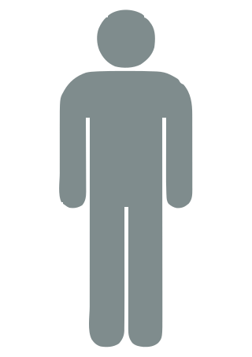

What does the shark attack history look like in Australia?
Every incident since 1791 plotted on the coast makes one thing immediately clear: NSW dominates in raw dot density, particularly around Sydney Harbour and the northern beaches. The Gold Coast and Byron Bay corridor form a second major cluster further north.
Filtering by decade shows the map thinning dramatically before 1900 and becoming increasingly dense after 2000, reflecting both population growth and improved incident reporting. Fatal dots are distributed across the whole coastline rather than concentrated in any single hotspot, which suggests danger is not confined to famous beaches.
NSW leads on raw volume with 438 incidents but sits in the middle of the pack per capita. WA tops the rate map at around 71 incidents per million people, followed closely by QLD at 69 per million, reflecting how much of both states’ populations live and recreate on the coast.
Victoria sits at the bottom at around 10.5 per million, consistent with colder southern waters that reduce year-round beach activity. SA and QLD share the highest fatality rates at around 27%, despite having very different total incident counts. SA’s elevated fatality rate is partly explained by the dominance of white sharks in its cooler southern waters, particularly around the Neptune Islands and the Eyre Peninsula, where great whites congregate and grow to exceptional size.
Raw counts peak in the 2010s at 231 incidents, more than double the 2000s figure of 113. Switch to per capita and the picture changes considerably. The 1920s and 1930s were actually the most dangerous decades at around 14 to 15 incidents per million Australians, a period before beach safety infrastructure, shark nets, and aerial surveillance existed in any meaningful form.
NSW introduced the first shark meshing program at Sydney beaches in 1937, which coincides with a modest flattening visible in the raw count view. The WW2 years show a visible dip, consistent with reduced civilian beach activity during wartime. The 2010s reach about 10 per million, high but well below the interwar peak. The population-adjusted view makes a straightforward case that more Australians in the water, rather than any change in shark behaviour, accounts for most of the apparent modern surge.
Which shark should you actually fear?
White, tiger, and bull sharks account for nearly all 250 recorded fatalities. White sharks lead at 91 deaths, tiger sharks at 86, bull sharks at 63. These three species share a key trait: they are large, genuinely predatory, and found in the same coastal shallows where Australians swim.
The wobbegong band is thick on the left but terminates almost entirely in the injured column. 201 incidents, zero deaths. Wobbegongs are ambush predators that sit camouflaged on reef and sandy bottoms; they bite when stepped on or handled and then let go. A wide band here does not mean a large shark. But are the sharks involved in more incidents generally bigger?
No. Wobbegong ranks third for incident volume at 201 bites yet its median recorded length is just 1.2 m, the smallest of the six groups. These are bottom-dwelling ambush fish, not open-water predators. High incident count and large body size simply do not go hand in hand.
The species driving the death toll in the sankey are a different story. White sharks (361 incidents, 3.0 m median) and tiger sharks (229, 3.0 m) are among the largest sharks in the database and among the deadliest. For the sharks that actually kill, size and danger align. Volume alone is a poor guide to how big the animal was.
Risk depends on what you are doing
Swimming sits at the far right on both arms: 451 incidents and a 34.6% fatality rate. This is higher than the overall fatality rate of 22.6%, and the gap is partly explained by body position. A swimmer is mostly submerged, moving slowly, and presents a profile similar to a seal from below.
Surfing and boarding produce 284 incidents but only a 9.5% fatality rate. Surfers are moving faster, partially above the surface, and shark bites in this context tend to be investigatory rather than predatory: the shark bites once and retreats, which is consistent with the low death rate. Fishing and boating together account for 70 incidents and zero deaths, likely because the victim is never fully in the water.
The dial is nearly empty between midnight and 5 am, just 11 incidents across those five hours. Incidents build through the morning and peak sharply at 4 pm with 55 total and 17 fatal. There is a secondary spike around 11 am.
The 4 pm peak coincides with peak beach attendance during Australian summers and with the low afternoon sun angle that creates glare and reduces underwater visibility, making it harder for both swimmers to see approaching sharks and potentially harder for sharks to identify what they are approaching. The fatal inner ring tracks the outer ring without spiking at any specific hour, meaning the time of day does not dramatically change your odds of surviving a bite if one occurs.
Who gets attacked

or = 10 incidentsMales account for 1,060 of 1,177 victims, roughly 90%. The male fatality rate sits at 21.9% compared to 13.7% for females. The volume gap is largely an exposure gap: surveys of Australian beach attendance and water activity consistently show men spending more time in the surf, swimming further from shore, and dominating activities like spearfishing, diving, and board sports that involve prolonged submersion in deeper water.
The fatality rate gap is smaller but real, and it likely reflects the same activity skew. A man spearfishing in 10 metres of water and a woman swimming inside the flags at Bondi face very different risk profiles, and the aggregate numbers reflect that difference.
Where age is recorded (697 of 1,203 incidents), the two curves tell separate stories. Among fatal attacks, the sharpest concentration sits at age 16 (14 incidents), with most deaths still falling between 10 and 25. The fatal ridge is wider than the survived one, spreading further into the 20s and 30s, but it never leaves the young-adult range.
Among those who survived, the single-year peak is age 17 (27 incidents), with the same broad 10–25 cluster. Both outcomes skew young because teenagers and young adults spend the most time in the water. The difference is volume and spread, not a wholesale shift to middle age: survived incidents outnumber fatal ones at almost every age under 30.
How does Australia compare with California?
At state scale the comparison finally balances. New South Wales leads Australia with 286 incidents since 1950, spread between a Sydney and Central Coast cluster and a second band around Byron Bay. California records 202 white-shark incidents in the same period, but roughly seven in ten fall inside the surf corridor from San Diego to Mendocino.
Both states are board-heavy surf cultures: 51% of NSW incidents involve surfing or boarding, against 43% in California. The difference is geography, not appetite for risk: NSW still spans hundreds of kilometres of coast, while California packs most of its dots into one visible triangle. The national picture remains in Section 1; this is the state-level peer comparison.
Bars default to incidents per million people (2021 populations) so the two states compare on a level footing. Read each cluster left to right: California then NSW. Injured encounters dominate in NSW at 22.8 per million against California’s 2.75; fatalities stay closer (0.38 vs 2.45).
Switch to raw incident count and the picture softens but the pattern holds: NSW leads on injured (186 vs 108), while uninjured totals are almost tied (80 vs 79). The share of all incidents that ended in death stays near 7% in both places.